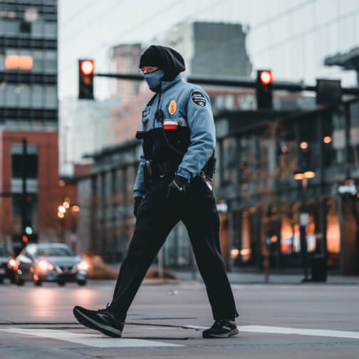

A UK Registered Security Company You Can Trust
We are a UK registered security company delivering reliable and professional security solutions for businesses, public spaces, and private clients. Our approach is built on integrity, accountability, and consistent service quality.
Every assignment is supported by trained and vetted personnel who understand prevention, observation, and customer-facing professionalism. From static guarding to CCTV monitoring and event protection, we tailor services to your exact needs.
We continue to invest in our team through ongoing development and clear operating standards, ensuring dependable coverage and strong communication at all times. Our mission is simple: to provide professional security you can rely on.
10
Years in Business
500+
Happy Customers
128
Licensed Officer
2K+
Assets Protected
Security Solutions
As a UK registered provider, Haidery Guarding LTD safeguards what matters most through reliable, professional, and responsive security services. Whether you need support for a site, a venue, or a private event, our team is ready to deliver trusted protection with confidence.
